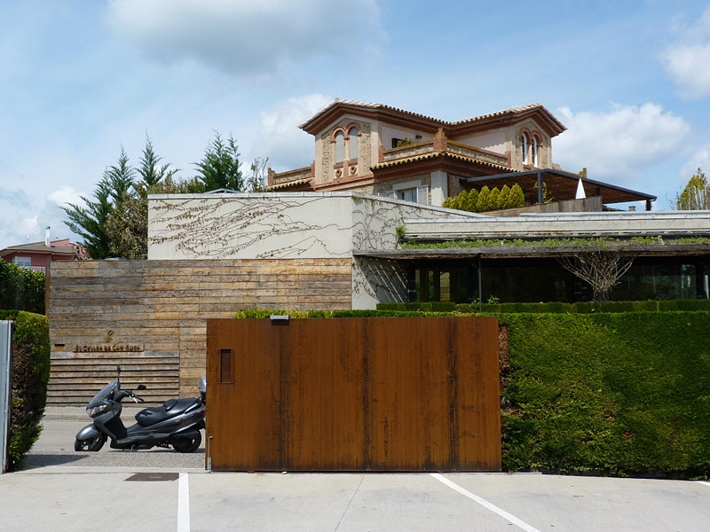
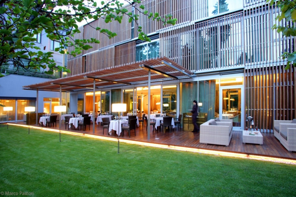

Celler de can roca
La pasión por la cocina que sienten los hermanos Roca empezó a forjarse en Can Roca, el establecimiento que sus padres regentan en Taialà, un barrio en las afueras de Girona. Allí crecieron, en medio del bullicio de platos, ollas y clientes. El bar era su salón, el paisaje donde jugaban, hacían los deberes escolares, miraban la televisión… a la vez que, desde la cocina, surgían aromas de los guisos que su madre preparaba de forma generosa, sencilla y honesta.
Link de la informacionABaC
Las puertas del ABaC Restaurant se abrieron en 2000 en el número 79 de la calle del Rec de Barcelona, emplazamiento donde, bajo la atenta mirada del chef Xavier Pellicer, esta aventura gastronómica comenzó a tomar forma. Siete primaveras más tarde y dos Estrellas Michelin en el bolsillo corroboraban la calidad de todo el trabajo realizado por el equipo de ABaC, pero la recompensa no venía sola. La nueva etapa debía arrancar en un espacio igual de lujoso como la oferta culinaria que proponían y, por este motivo, en 2008 el restaurante se trasladó al número 1 de la Avenida Tibidabo. El edificio diseñado por Antoni de Moragas combinaba tradición y modernidad, y las instalaciones, con capacidad para 56 comensales, se adaptaban perfectamente al volumen de trabajo que ABaC recibía.
Link de la informacionMartin Berasategui

El prestigio de Martín Berasategui, el cocinero español con más Estrellas Michelin en territorio nacional, doce y tercero a nivel mundial, despega de manera vertiginosa el 1 de mayo de 1993 al inaugurar junto a su mujer, Oneka Arregui, el Restaurante Martín Berasategui en Lasarte-Oria, a 7 Km de San Sebastián. A los 6 meses de la inauguración consigue la primera Estrella Michelin; tres años después recibe la segunda y en la guía de 2002 le otorgan la máxima calificación de la emblemática guía, tres.
Link de la informacion